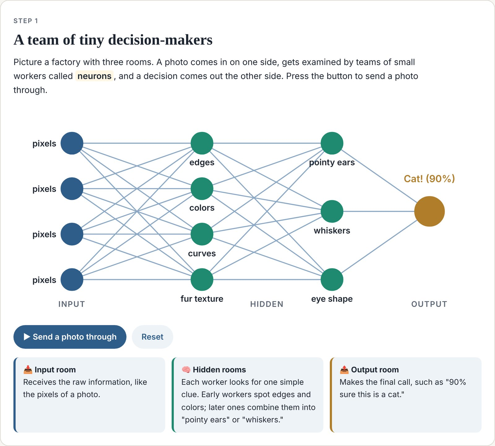
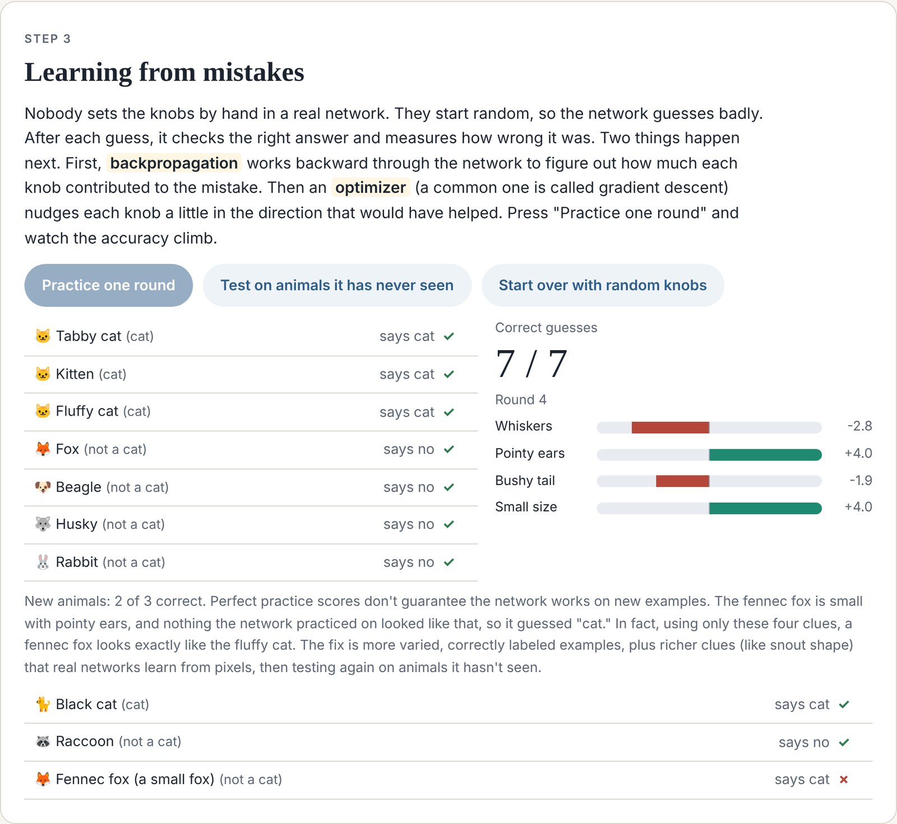

Artifact Visual


Introduction
Albert Einstein is credited with saying that if you can't explain something simply, you don't understand it well enough. This artifact takes that challenge seriously. It explains how a neural network learns using a single analogy that anyone can follow: learning to recognize a cat as a child, not from a rulebook, but from seeing many cats.
My first two artifacts show how I build an AI tool and how I research the history of AI. This one shows a different skill: teaching a technical concept to people who have no background in it. In AI roles, explaining how a model works to leaders, customers, and teammates is often as important as building the model itself.
Description
The explainer is an interactive web page with four short steps, followed by a quick check:
- The three rooms. An animated diagram shows a photo passing through the input layer, two hidden layers of neurons that look for clues like edges, whiskers, and pointy ears, and an output layer that makes the final call.
- Volume knobs. Visitors pick an animal and move sliders that act as weights. A meter shows how sure the network is, and a "doorbell" shows the activation threshold being crossed or missed.
- Learning from mistakes. Visitors train a real, tiny network on seven animals. Each round, it measures its errors and adjusts its weights, going from 3 of 7 correct guesses to 7 of 7. A final button tests the trained network on animals it has never seen, and it mistakes a small fennec fox for a cat, showing why perfect practice scores are not enough.
- Why it matters. Real-world uses (face unlock, medical imaging, voice assistants, generated images) connect the idea to CNNs, RNNs, and GANs, along with an honest note about the "black box" problem.
The page ends with a quick-check question that readers can answer before revealing the explanation.
Objective
This artifact began as my initial post for the Workshop 3 discussion in AIML 500: Machine Learning Fundamentals, which asked students to work with a generative AI model to create the best simple explanation of neural networks, applying the lesson's strategies for communication and learning. The objective of the portfolio version was to go further: to let readers experience how a neural network learns rather than only read about it, so that terms like weights, activation functions, and backpropagation make sense to someone with no technical background.
Process
- Studying the strategies. I reviewed the lesson's communication and presentation strategies, including chunking, progressive disclosure, storytelling, visual aids, relevance, interactive learning, and feedback.
- Prompting for simplicity. I worked with a generative AI model to draft the explanation. The first drafts were accurate but too technical, with terms like "matrices" and "gradients," so I revised my prompts to ask for one analogy carried throughout, plain-language definitions, and no math.
- Checking accuracy. I checked each concept against the course reading (Jones, 2021), including how backpropagation sends the error backward and why deep networks are hard to explain.
- Turning the post into an experience. For the portfolio, I rebuilt the text post as an interactive page. The diagram, sliders, and training simulation apply the lesson's interactive learning and visual aid strategies, and the training example uses a real learning algorithm on a tiny data set, so what visitors see is how networks actually learn.
- Revising from classmate feedback. A classmate's comments on my discussion post led to two improvements, shown in the table below.
- Testing on desktop and mobile. I checked that every interaction works on both screen sizes and that the network reliably learns all seven animals within a few rounds.
Feedback that shaped the final version
| Feedback | What I changed |
|---|---|
| The volume knob analogy for weights and the short steps make the topic approachable and show chunking and progressive disclosure. | Kept the single analogy and the four-step structure as the backbone of the page. |
| Backpropagation calculates how each weight contributed to the error, while an optimizer makes the adjustments. | Rewrote Step 3 to separate the two: backpropagation finds each knob's share of the mistake, then an optimizer such as gradient descent nudges the knobs. |
| For the fox example, use more varied, correctly labeled examples of foxes and cats and test on unseen images, since adding more similar pictures could reinforce existing weaknesses. | Updated the quick-check answer and added a "Test on animals it has never seen" button, where the trained network mistakes a fennec fox for a cat. |
Tools and Technologies Used
- HTML, CSS, and JavaScript: the interactive diagram (SVG), the weight sliders, and the training simulation, which runs a small learning algorithm (gradient descent) in the browser and then tests the result on new examples.
- GitHub Pages: hosts the explainer and this portfolio.
- Course reading: Jones (2021) on IBM Developer, used to verify the explanations of neurons, backpropagation, CNNs, and RNNs.
- Claude (Anthropic): used to draft and refine the explanation through several rounds of prompting and to help build the page. I chose the analogy and the strategies, checked the content against the course reading, and made the final edits.
Value Proposition
If you have heard "neural network" a hundred times but never really understood it, this explainer lets you see one learn in about five minutes, with no math and no technical background required.
For managers, students, and anyone working alongside AI, understanding that a network learns from examples, and only from examples, makes it easier to ask the right questions: What data was it trained on? What has it never seen? Who checks its decisions? For educators and team leads, the page is a ready-made resource for introducing neural networks to a new audience.
Unique Value
Most beginner explanations of neural networks either stay abstract or jump straight into equations. This one carries a single analogy through every step and lets the reader do the learning: they turn the knobs themselves, then watch a real network discover on its own that "pointy ears" and "small size" matter while "whiskers" do not, because every animal in the set has whiskers. That moment teaches something many introductions miss: a network learns what separates examples, not what they have in common, and it can only learn from the examples it is given.
Relevance
As AI spreads across industries, more people need a working understanding of how it learns, not just engineers. Clear communication is a core part of leading change with AI: people are more likely to trust and use a technology they understand, and more likely to question it when it matters. This explainer also reflects my goal as an aspiring AI engineer: to build systems that are not only accurate, but understandable to the people who rely on them.
References
Jones, M. T. (2021, May 20). A beginner's guide to artificial intelligence and machine learning. IBM Developer. https://developer.ibm.com/articles/cc-beginner-guide-machine-learning-ai-cognitive/